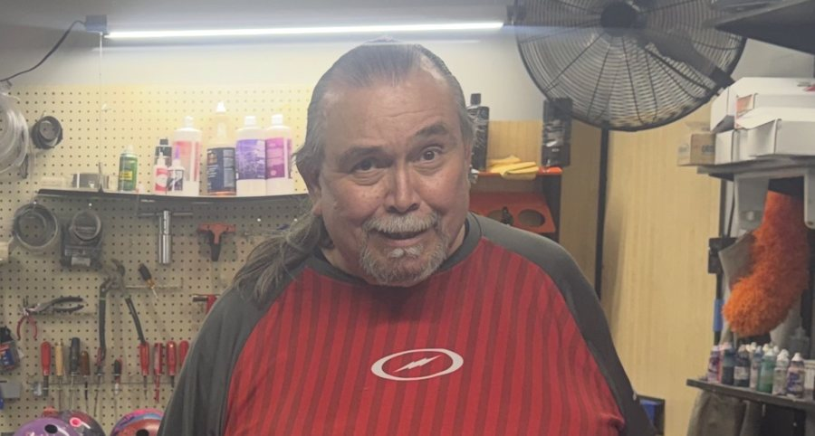
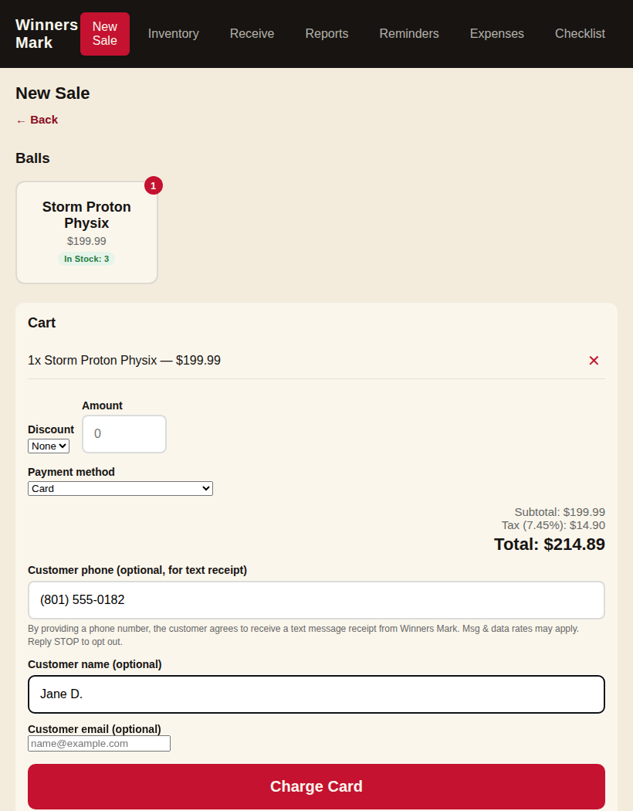

Winners Mark
Bowling Pro Shop
Custom drilling, resurfacing, and ball fitting from a shop that treats your release like it matters — because it does. Walk in, get measured, bowl better tonight.
Every bowler's hand is different. We measure, drill, and finish equipment specifically for how you throw — not off a generic spec sheet.
Custom bowling ball drilling with fresh layouts fit to your span, pitch, and rev rate, including finger inserts and a thumb hole sized to your hand. Walk out throwing it the same day.
Bowling ball resurfacing, cleaning, and polishing to restore reaction on a ball that's stopped hooking. Full surface adjustment menu, from dull sanded grits to high polish, done while you wait.
Plugging and redrilling, new finger inserts and thumb slugs, and span corrections for bowlers who've outgrown their current fit or bought a used ball drilled for someone else.
New to the sport or switching gear? A proper bowling ball fitting measures your span and pitch first, then matches you to a layout and coverstock that suit your game.
Current release bowling balls from Storm, Roto Grip, Hammer, Motiv, Brunswick, 900 Global, Columbia 300, Radical, Track, DV8, Ebonite, and Swag — plus Dexter and 3G bowling shoes, bags, and bowling accessories including grips, inserts, tape, shammies, and ball cleaners. Anything we don't have on the shelf we can special order.
Standing discounts on bowling balls, bowling shoes, and accessories, plus priority turnaround on drilling and resurfacing for league bowlers and teams who shoot here regularly.

Matt has spent years on both sides of the counter — competing as a bowler and drilling for bowlers who take the sport just as seriously. That's the difference at Winners Mark: every layout is built by someone who understands what it feels like coming off your hand, not just what the spec sheet says.
Whether you're chasing your first 200 game or drilling your tenth arsenal ball, Matt fits the work to your game — not the other way around. He personally handles every fitting and drilling session at the shop.
Winners Mark is an independent bowling pro shop inside Valley Lanes in West Valley City. Matt personally handles every ball fitting and drilling — the same person measures your hand, picks your layout, and drills the ball.
Most drilling and resurfacing jobs are ready before your next league night.
Every fitting is hand-measured against how you actually release the ball.
Talk to the person who drills your ball — not a call center.
Winners Mark is located inside Valley Lanes at 3951 W 5400 S, West Valley City, UT 84120, and serves bowlers throughout the greater Salt Lake County area.
Matt Voeltz, owner and master driller, personally handles fittings and drilling at Winners Mark.
Winners Mark carries current release bowling balls from Storm, Roto Grip, Hammer, Motiv, Brunswick, 900 Global, Columbia 300, Radical, Track, DV8, Ebonite, and Swag, along with Dexter and 3G bowling shoes, bags, and accessories. Anything not in stock can be special ordered.
Walk-ins are welcome, though calling ahead helps guarantee same-day turnaround during busy league nights.
Winners Mark is open Monday through Friday, 12pm to 8pm, Saturday 10am to 5pm, and Sunday, 11am to 6pm.
Winners Mark primarily serves West Valley City, Murray, Kearns, and the surrounding Salt Lake County area.
If you provide your phone number at checkout, Winners Mark will send you a one-time automated text message receipt confirming your purchase and total. By providing your phone number, you agree to receive this text. Consent to receive this text is not a condition of purchase. Message and data rates may apply. Message frequency varies based on your purchases. Reply STOP at any time to opt out of future messages, or reply HELP for help.
